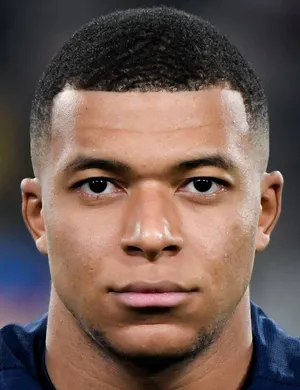

VELOCIDAD.
TALENTO.
AMBICIÓN.
Kylian Mbappé es un futbolista francés reconocido mundialmente por su velocidad, capacidad goleadora y habilidad para superar defensas.
Su estilo de juego combina aceleración, técnica y definición, convirtiéndolo en uno de los delanteros más destacados de su generación.
UNA CARRERA A GRAN VELOCIDAD
Mbappé comenzó a destacar desde muy joven gracias a sus actuaciones en el fútbol francés. Su velocidad y capacidad para marcar goles lo llevaron rápidamente a convertirse en una de las grandes promesas del deporte.
A lo largo de su carrera ha conseguido importantes títulos y reconocimientos individuales. Además, fue una pieza fundamental de la selección francesa que conquistó la Copa Mundial de 2018.